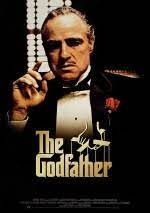
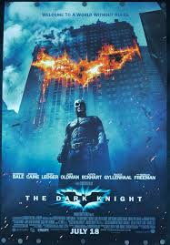
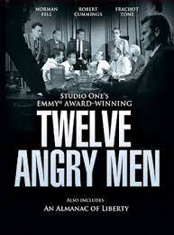

Chronicles the experiences of a formerly successful banker as a prisoner in the gloomy jailhouse of Shawshank after being found guilty of a crime he did not commit. The film portrays the man's unique way of dealing with his new, torturous life; along the way he befriends a number of fellow prisoners, most notably a wise long-term inmate named Red
The Godfather "Don" Vito Corleone is the head of the Corleone mafia family in New York. He is at the event of his daughter's wedding. Michael, Vito's youngest son and a decorated WW II Marine is also present at the wedding. Michael seems to be uninterested in being a part of the family business. Vito is a powerful man, and is kind to all those who give him respect but is ruthless against those who do not. But when a powerful and treacherous rival wants to sell drugs and needs the Don's influence for the same, Vito refuses to do it. What follows is a clash between Vito's fading old values and the new ways which may cause Michael to do the thing he was most reluctant in doing and wage a mob war against all the other mafia families which could tear the Corleone family apart.
Set within a year after the events of Batman Begins (2005), Batman, Lieutenant James Gordon, and new District Attorney Harvey Dent successfully begin to round up the criminals that plague Gotham City, until a mysterious and sadistic criminal mastermind known only as "The Joker" appears in Gotham, creating a new wave of chaos. Batman's struggle against The Joker becomes deeply personal, forcing him to "confront everything he believes" and improve his technology to stop him. A love triangle develops between Bruce Wayne, Dent, and Rachel Dawes.
The continuing saga of the Corleone crime family tells the story of a young Vito Corleone growing up in Sicily and in 1910s New York; and follows Michael Corleone in the 1950s as he attempts to expand the family business into Las Vegas, Hollywood and Cuba.
The defense and the prosecution have rested, and the jury is filing into the jury room to decide if a young man is guilty or innocent of murdering his father. What begins as an open-and-shut case of murder soon becomes a detective story that presents a succession of clues creating doubt, and a mini-drama of each of the jurors' prejudices and preconceptions about the trial, the accused, AND each other. Based on the play, all of the action takes place on the stage of the jury room.